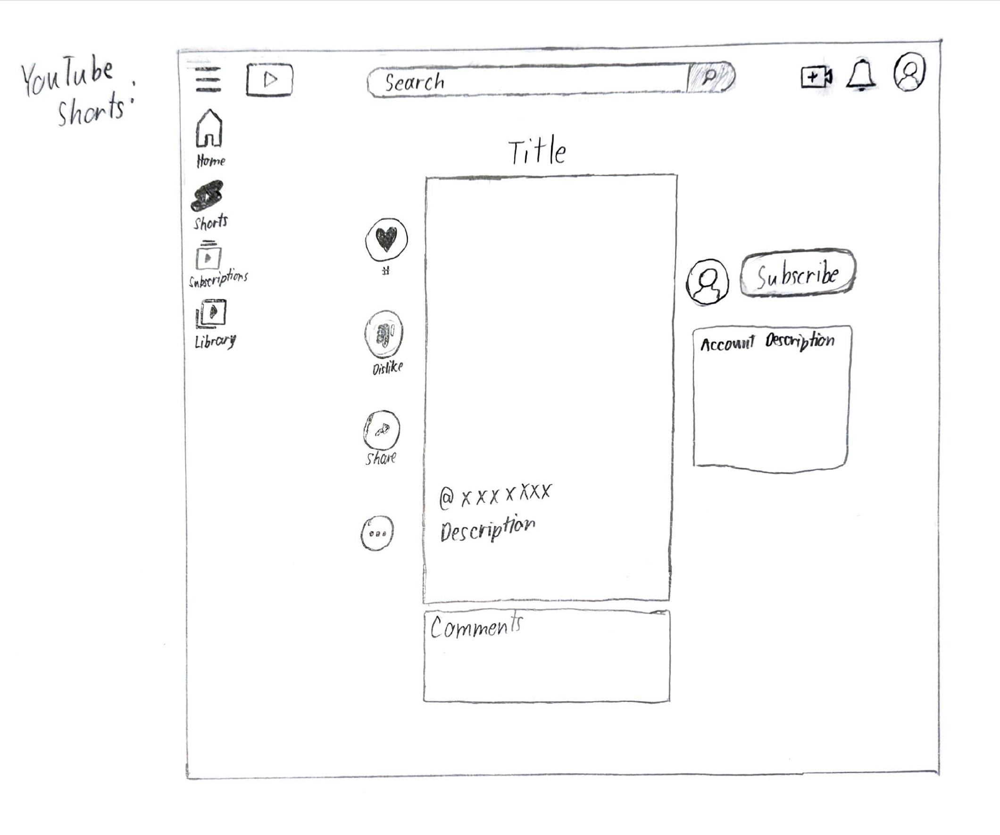
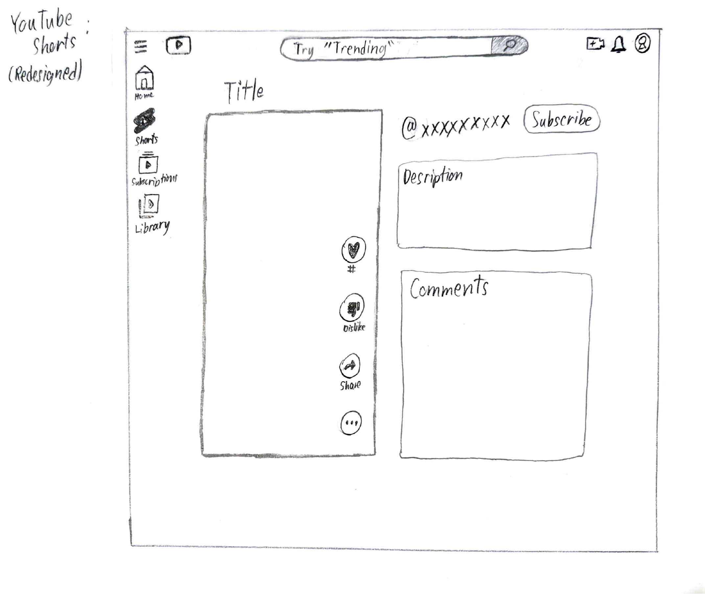

-
Using the favorite website you chose in homework 1, create a wireframe for one page of it using pen/paper, PowerPoint, or any your tool of choice. (use the 'img' tag!) Make sure to let us know what the name of your website is (Use the 'p' tag!)
YouTube Shorts
 -
Try to improve the website you've chosen, and create a redesigned wireframe of one page for the same website using the principles of visual hierarchy that you learned from the article.
YouTube Shorts

-
What is the goal of the website? Who is it intended for? How does the design accomplish this? Write 2-3 sentences answering these questions. (Use the 'p' tag again!)
The goal of the website is to host videos for entertainment, news, etc. and is oriented for audiences of all ages. YouTube Shorts is the branch of YouTube dedicated to short form videos intended for younger audiences as a compeititor for other platforms like TikTok and Instagram Reels. The design of YouTube Shorts accomplishes this with vertical-oriented videos and an interactive interface including a like, dislike, comment, share, and subscribe button.
-
Write 2-3 sentences about what problems your redesign addressed, and how it solved them.
The largest problem about the website is that there was too much white space on the left and right side of the content that made the website seem barren. My redesign fills in some of the empty space without overstimulating the user. I also expanded on the interactive aspects like the comments section which is key for most short-form videos.
NOTE: Make sure to include the wireframe images in the website and don't just put it in your assets folder!
Your wireframes should look something like this: